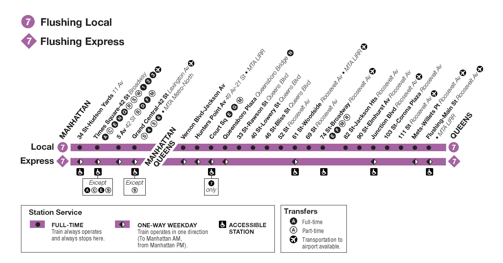

Code
x = None
type(x)NoneTypeDSAN 5500: Data Structures, Objects, and Algorithms in Python
None
\[ \underset{\text{\small{Always 0}}}{\underline{\hspace{16mm}}} \]
x = None
type(x)NoneType Boolean (True or False)
\[ \underset{\{0,1\}}{\underline{\hspace{12mm}}} \]
x = True
type(x)bool Numbers (int, float)
\[ \small{\underset{\small{\{0,1\}}}{\underline{\hspace{8mm}}}~ \underset{\small{\{0,1\}}}{\underline{\hspace{8mm}}}~ \underset{\small{\{0,1\}}}{\underline{\hspace{8mm}}}~ \underset{\small{\{0,1\}}}{\underline{\hspace{8mm}}}~ \underset{\small{\{0,1\}}}{\underline{\hspace{8mm}}}~ \underset{\small{\{0,1\}}}{\underline{\hspace{8mm}}}~ \underset{\small{\{0,1\}}}{\underline{\hspace{8mm}}}~ \underset{\small{\{0,1\}}}{\underline{\hspace{8mm}}}} \]
x = 3
print(type(x))
y = 3.14
type(y)<class 'int'>floatNone: 1 bit, bool: 1 bit, int: 32/64 bits)None: 1 bit (Always 0)
import sys
sys.getsizeof(None)16Boolean (True or False): Exactly 1 bit (0 or 1)
sys.getsizeof(True)28int: 32 or 64 bits (depending on OS)
sys.maxsize9223372036854775807
Why is this happening?
my_beautiful_app.c
time_t current_time = time(NULL);
int num_rows = 13;
bool filled = true;
bool empty = false;
int num_cols = 2;
char username[] = "Jeff";
int i = 0;
int j = None;
void z = NULL;
my_beautiful_app.py
import datetime
cur_date = datetime.datetime.now()
num_rows = 13
filled = True
empty = False
num_cols = 2
username = "Jeff"
i = 0
j = None
z = 314
l, and a value v, return the index of l which contains vl contains v more than once? What if it doesn’t contain v at all? What if l is None? What if v is None? What if l isn’t a list at all? What if v is itself a list?

\[ AB = \begin{bmatrix} a_{11} & a_{12} \\ a_{21} & a_{22} \end{bmatrix} \begin{bmatrix} b_{11} & b_{12} \\ b_{21} & b_{22} \end{bmatrix} = \begin{bmatrix} a_{11}b_{11} + a_{12}b_{21} & a_{11}b_{12} + a_{12}b_{22} \\ a_{21}b_{11} + a_{22}b_{21} & a_{21}b_{12} + a_{22}b_{22} \end{bmatrix} \]
\[ AB = \begin{bmatrix} A_{11} & A_{12} \\ A_{21} & A_{22} \end{bmatrix} \begin{bmatrix} B_{11} & B_{12} \\ B_{21} & B_{22} \end{bmatrix} = \begin{bmatrix} A_{11}B_{11} + A_{12}B_{21} & A_{11}B_{12} + A_{12}B_{22} \\ A_{21}B_{11} + A_{22}B_{21} & A_{21}B_{12} + A_{22}B_{22} \end{bmatrix} \]
\[ \begin{align*} m_1 &= (a_{11}+a_{22})(b_{11}+b_{22}) \\ m_2 &= (a_{21}+a_{22})b_{11} \\ m_3 &= a_{11}(b_{12}-b_{22}) \\ m_4 &= a_{22}(b_{21}-b_{11}) \\ m_5 &= (a_{11}+a_{12})b_{22} \\ m_6 &= (a_{21}-a_{11})(b_{11}+b_{12}) \\ m_7 &= (a_{12}-a_{22})(b_{21}+b_{22}) \end{align*} \]
\[ AB = \begin{bmatrix} m_1 + m_4 - m_5 + m_7 & m_3 + m_5 \\ m_2 + m_4 & m_1 - m_2 + m_3 + m_6 \end{bmatrix} \]
\[ AB = \begin{bmatrix} M_1 + M_4 - M_5 + M_7 & M_3 + M_5 \\ M_2 + M_4 & M_1 - M_2 + M_3 + M_6 \end{bmatrix} \]